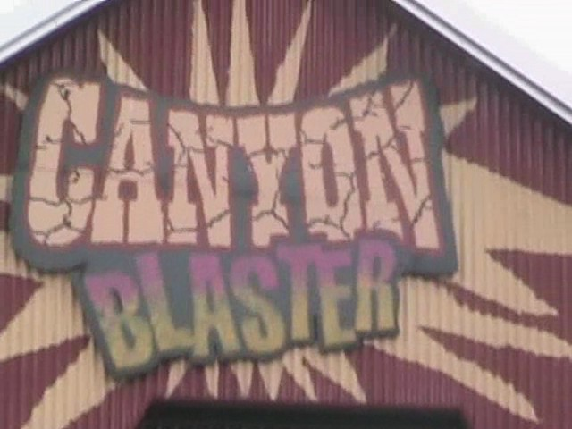

| |
Canyon Blaster Review
We're here at Six Flags Great Escape. Today's ride we'll be reviewing for you is Canyon Blaster. After getting in the cars, you roll down a dip and head into a big long stretch of straight track. Then after wards, you turn around and head straight for the lifthill. It's a pretty small lifthill. Once we reach the top, we dip off, turn to the left, and then go through some bizzare banked straight track. It's not fun, but it's bizzare enough to make you go "What the hell is this?" You then go through a small dip, where we finally get a little speed. We then roll through a ground hugging turn. The ride does have a good setting, so that makes the ground hugging turn more fun. We suprisingly don't lose our speed when going through this part of the ride. Afterwards, you twist up and turn into the second lifthill. At the top, you go through a dip, then pop back up into some straight track. You slowly roll through it, and then coast through a turn. Then you see it. The Fake Helix of Death. It's very similar to the ones on Cedar Creek Mine Ride and Goldrusher. But there's one HUGE difference between them. On Cedar Creek Mine Ride and Goldrusher, you've already got some speed and so going down into this fake helix of death just makes things more fun. But on Canyon Blaster, we're crawling before we get to this. So it's not nearly as fun. And then you rise up and hit the brake run. It's already over. While better than Trailblazer, this is still one of the worst in the mine train family (Though it does fit in well at Six Flags Great Escape). I'd only recommend riding it if you are getting into coasters, need the credit, or if it has a walk on wait.
2/10
Location: Six Flags Great Escape
Opened at Opryland USA in 1972
Moved to Old Indiana Fun-n-Water Park in 1998
Moved to Six Flags Great Escape in 2003
Built by: Arrow
Last Ridden: August 3, 2011
Canyon Blaster Photos



Home
|